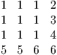

This chapter explains how the BrailleR add-on package can be used by blind people to get many tasks done quickly and effectively. In general, the package does three things:
Initially, the package was built on top of functionality I wrote to support my own work practices, but additions to meet the needs of other blind R users have been made on request.
You will need to install the BrailleR package before continuing on with the examples in this chapter. It is available from CRAN. Use the examples in Chapter 14 to help install this package. Then use the library() command to make sure the package is ready for action.
This chapter was created using version 0.25.0 of the BrailleR package. This version of the package has a number of other packages that it depends on for functionality. When you make the BrailleR package available, you may see a few introduction messages that tell you about the other packages being loaded. You will be told about some default settings for the package that can be altered later to suit your needs.
In Chapter 2 I mentioned the need to save the content of the console window to a text file to be able to copy and paste its content to a report or document. One major feature of the BrailleR package is that this functionality can be done easily and efficiently.
There are three types of content printed in the console window.
The sink() command does not currently record the commands or the errors and warning messages. It is therefore a valuable tool for those R users that are confident about the validity of their scripts.
Saving the commands typed into an R session can be achieved using the savehistory() command. For example
will save all the issued commands into a text file called WhatIDidToday.txt in the working directory.
If I just want to have everything I do during a session recorded for posterity, I want all contents of the console window to be saved. A plain text file is sufficient but it is possible to use add-on packages to create other file formats.
I have included a convenience function in the BrailleR package that starts a text file with the date and time in its filename. It gets saved in the current working directory. To get this file started, just type
In fact this command starts several files, one for the complete console and one for the issued commands. The command actually runs the txtStart() command but specifies particular options for the user’s convenience. If you are happy to use the defalt filename then you just need to hit <enter>, but if you want to specify the filename, you type the name, and then hit <Enter> twice (once for your file and once to get out of the filename requesting prompt).
See the help page for the txtOut() command as it includes the history of the command and its relatives. The other related commands add comments to the text file or stop the processing entirely. Also note that the help page mentions how to get the packages needed for other file formats.
You can open the text file that is being created and modified as you work in any browser. Once you have the file open and have done some work, you must refresh your browser to see the latest changes. Keep the browser open as you work and remember to refresh often to keep on top of what is happening with complete access via your screen reader.
Statistics is an inherently visual discipline. Many statistical analyses lead to a graphic representation of data that is easy for the sighted world to interpret. Through use of R we can create functions that can interpret the graphs using text descriptions. We’ll start with a histogram.
In most circumstances, the user will create a histogram using the hist() command. This command takes data and creates a number of values needed to construct the histogram. We can see what has been created by storing these values in an object. For example:
The plot argument stops the graph being plotted. We can get the graph anytime by issuing the plot() command but we are interested in seeing what R has stored in the MyHist object.
The full print out has everything we need but is not in a friendly format. The str() command gives us a condensed version of the data being stored but isn’t sufficient, and the class() command just tells us that this information is stored in an object of type histogram. The class of the object is the most important as it is what tells R how to work on the object when we use the plot() command on the MyHist object. The plot() command is actually a family of commands, one of which is purposely designed for histograms. The plot.histogram() command is actually what constructs the graph when the user calls the plot() command on an object of type histogram. This family of commands is known as a method.
The BrailleR package includes a method for creating text interpretations in a similar way. The VI() command is actually a family of commands that includes the VI.histogram() command. When we issue the VI() command on the MyHist object, the VI.histogram() function does the work. Let’s see what we get:
Other functions exist for boxplots and dotplots. Try:

and
The dotplot() command is not part of base R which uses the stripchart() command instead. The hist() and boxplot() commands used here are actually commands from the BrailleR package that use the standard commands indirectly. At this point in time, I haven’t worked out how to get the stripchart() command to work as a BrailleR command so I needed to use a different name for my version. The BrailleR versions of these three commands store the additional information we need to get the text interpretation that is not possible from the standard version of the commands.
The UniDesc() function is designed to quickly generate a text summary of a single variable. It also saves several graphs. It can also save the text in a file and use the VI() command from the BrailleR package to add text descriptions to the output file.
One obvious issue is that saving lots of files could become problematic. Default filenames are used and all files can be put into a folder of the user’s choosing.
An example will help. Try
Take a look in the AirQuality folder that has been created in your working directory. It has a number of files that all start with “Ozone" — the name of the variable being analysed. You will also have three files stored in the current working directory which have the filename Ozone-UniDesc.* where the star is for the extension which is one of html, R, and Rmd.
The most useful one at first is the Ozone-UniDesc.html file. Open this file in a browser to see what analyses have been included. This file is specifically formatted for use with screen readers. I hope you find it valuable. If you are reading this document on the web, then the link Ozone-_UniDesc.html will open it in your browser. The link will not work if you are using the pdf version of LURN.
The commands used to generate parts of this HTML document are given in the R script file; the third file is called an R markdown document. This is the file that gets converted into the other two files. It might prove useful to learn how to write this kind of file for yourself one day.
In the airquality subfolder you will find that graphs have been saved in a variety of formats. They each have their uses and hopefully the filetype you need is there. Special attention is made for those users of LATEX who need specific formats for graphics. Some more advanced information is presented in LATEX formatted tables and put into files with the tex extension. For example, the content of Table 15.1 were presented in the Ozone-UniDesc.html document and included in this document using the LATEXversion of that table.
| Statistic | P Value | |
| Shapiro-Wilk | 0.8787 | 0.0000 |
| Anderson-Darling | 4.5211 | 0.0000 |
| Cramer-von Mises | 0.8033 | 0.0000 |
| Lilliefors (Kolmogorov-Smirnov) | 0.1480 | 0.0000 |
| Pearson chi-square | 73.7241 | 0.0000 |
| Shapiro-Francia | 0.8786 | 0.0000 |
Whenever the VI() function is employed on an object that does not yet have an explicit function tied to it, then you will be told that this is the case. This package is a work in progress after all. Please feel free to send an email if you’d like any extra functionality.
Some R output is arranged in nice tables that are easy for the sighted user to read, but are difficult to understand if using synthesised speech to read the information back to you. The VI() command is used again here but is now employed on a data.frame object. We’ll compare it with the summary() command used frequently.
The output generated by the summary() command is difficult to follow as variables are represented in columns while rows that are read aloud by a screen reader are for the sample statistics.
The VI() method has given us a summary of the variables one by one. This should prove easier to navigate and interpret as either a braille or screen reader user.
One challenge facing blind people is the inability to glance at a graph and understand what is intended just as sighted people can. The most difficult graphs to deal with are multidimensional representations of data. Two dimensional scatter plots are the first example of such graphs.
When a sighted person looks at a scatter plot, they are looking for a number of things. A relationship between the variables is the most common thing to look for, but there is also a need to identify points that are unusual in the context of the data presented.
One possible way to describe how the data points are summarised at a glance is that the graphing window is broken up into areas and a rough guess at the density of points within each region is evaluated. If this evaluation of density can be guessed, it can be counted more exactly by a purposely written function. The WhereXY() function does this counting for us. It assumes equal-sized rectangular regions in the graph window. We can choose how many regions but the illustrations here all use a 5×5 grid.
Let’s work with a number of examples, all based on a set of predetermined x-values and various possible y-values.
What we might guess from the above is that a graph of (x,y1) pairs would show quite a lot of noise; (x,y2) pairs are a parabola with some noise; (x,y3) pairs are for a straight line with some noise; and, (x,y4) pairs are the same as the previous straight line, but one point is some distance from the line.
The WhereXY() command for each plot is now given.
We might also alter the number of cells in the grid to see how sensitive we want to make our investigation. Personal preferences will determine which combination of rows and columns works best.
Future developments in the BrailleR package will be made to meet demand. If you do want some additional functionality that you think is likely to be wanted by others then please do add to the wish list. Current ideas on the wish list include: